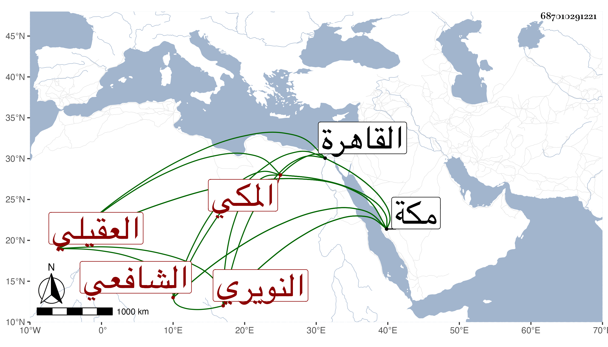

0902Sakhawi.DawLamic.ITO20230111-ara1.EIS1600.687010291221
Biography ID: 687010291221
590
محمد بن محمد بن محمد بن علي بن أحمد بن عبد العزيز الجمال أبو الخير بن أبي اليمن العقيلي النويري المكي الشافعي أخو علي وعمر وقريب الذي قبله ، وأمه حرير الحبشية فتاة أبيه . ولد في جمادى الأولى سنة تسع وأربعين وثمانمائة بمكة وحفظ القرآن وأربعي النووي ومنهاجه والمنهاج الأصلي وألفية النحو وعرض على جماعة وسمع من أبي الفتح المراغي وغيره ، وأجاز له غير واحد كوالده وأعمامه أبي البركات محمد وكمالية وأم الوفاء بني علي بن أحمد وأبي الفضل وخديجة ابني عبد الرحمن وأم الخير ابنة العز النويريين وأحمد بن عبد الرحمن بن سليمان المقدسي وأحمد بن عمر بن محمد بن أحمد بن عبد الهادي والشهاب بن زيد والزين عبد الرحمن بن خليل القابوني وابن جوراش والجمال بن جماعة والتقي أبي بكر القلقشندي المقدسيين وآخرين وأخذ عن الشمس الجوجري بمكة والقاهرة وقد قدمها مرارا وكذا أخذ عني فيهما أشياء وحضر دروس ابن عطيف وغيره ثم أعرض عن ذلك سيما بعد موت أخويه وهو كثير التودد لطيف العشرة لديه حشمة وأدب .
